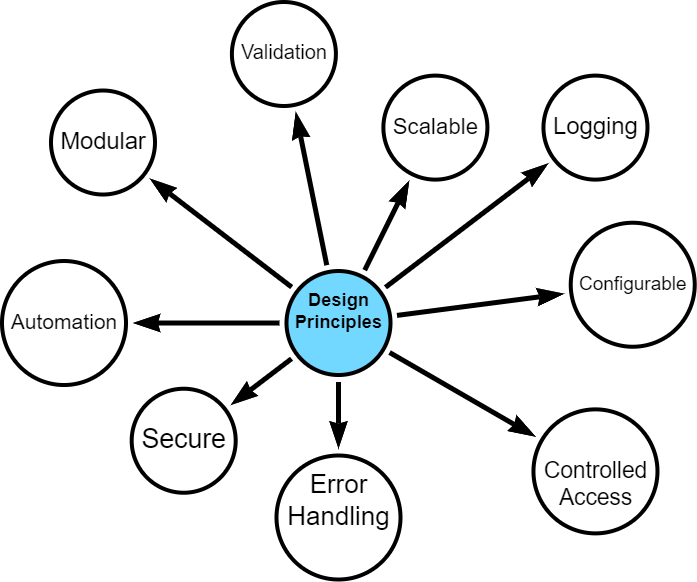
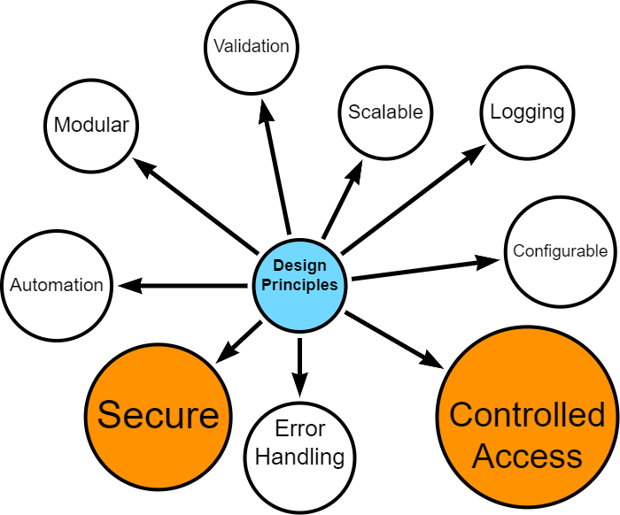
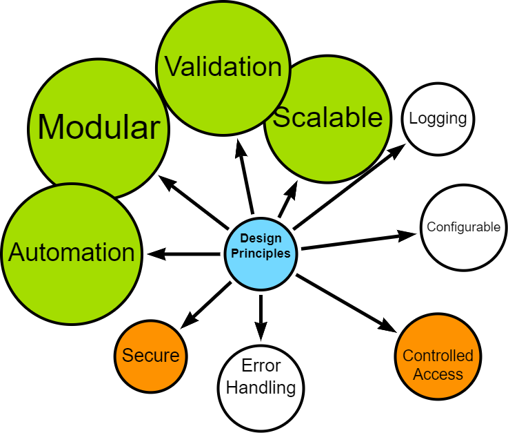
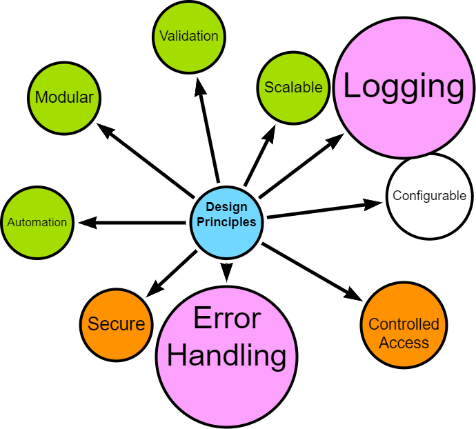
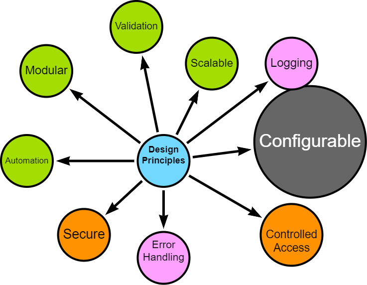

Data Engineering Overview
A main objective of my project is the development of a data pipeline which efficiently and securely transfers selected university timetabling data from a relational database (MS SQL) to a graph database (Neo4j).
This section provides an overview of the pipeline architecture, fundamental design principles, implementation approach and key learning takeaways.
High-level Architecture
The data pipeline consists of these core stages:
- Extraction: Data is extracted from the SQL database and saved into CSV files.
- Transformation: CSV files are processed, cleaned, transformed, merged, and anonymised using Python.
- Intermediate Storage: Processed CSVs are uploaded to Google Drive (required for Neo4j Aura free instance).
- Loading: Clean data is processed and loaded into Neo4j.
Design Principles
Several “best practices” in data handling, processing, and database management were incorporated in developing this ETL. The data pipeline is built on several core design principles:

I started with a strong sense of what I wanted to build - a modular, scalable, secure and configurable design - however, what exactly this meant was only discovered during the development process.
Given project constraints - deadline, word-limits, resources, data, technology - it is fair to say that compromises were made. That said, it was important that the final artefact is one that can be developed further for specific business use-cases.
Security and Data Protection

- Secure access controls
- Data anonymisation
- Controlled handling of personally identifiable information
Modularity, Scalability and Automation

- Distinct, interoperable modules (extract, process, upload, load)
- Ability to handle increased data volume and complexity
- Automation, where possible
- Configurable data processing options (e.g., data chunking, row processing)
- Optimised, where possible
Error Handling and Logging

- Robust error handling
- Comprehensive logging for troubleshooting and auditing
User configurable

- Flexible configuration options for data filtering, directory controls, and schema handling
Implementation Approach
The pipeline was developed using an iterative approach, allowing for continuous discovery, refinement and improvement.
Crucial aspects of the implementation include:
- Technology Stack: Python for data processing, MS SQL for source data, Neo4j for the target graph database. See Technology Stack for more details.
- Cloud Integration: Utilisation of Google Drive for intermediate storage, compatible with Neo4j Aura.
- Validation: Implemented at various stages to ensure data integrity and fitness for processing.
- Testing: Continuous simulated unit testing to ensure that components are behaving as expected.
Upcoming Sections
The following sections will delve into specific implementation details of each stage, demonstrating how these principles are put into practice, before reflecting on lessons learned and potential future enhancements.